أحدث المقالات والأخبار
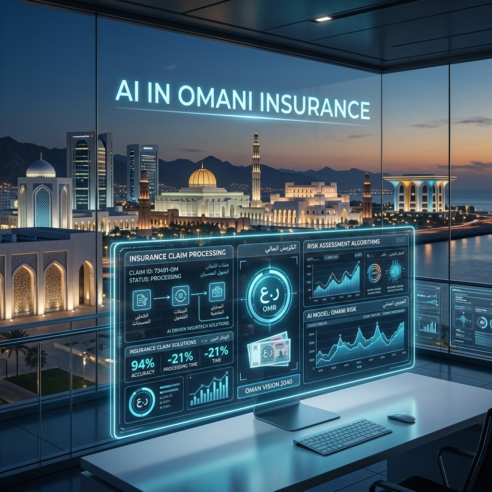
2026-04-30
الذكاء الاصطناعي في قطاع التأمين العماني: كيف تزيد الأتمتة من عائد الاستثمار وتخفض التكاليف
اكتشف كيف تستخدم شركات التأمين في مسقط الذكاء الاصطناعي لتقليل وقت معالجة المطالبات بنسبة 60% وتعزيز الربحية من خلال نماذج المخاطر القائمة على البيانات.
اقرأ المزيد ←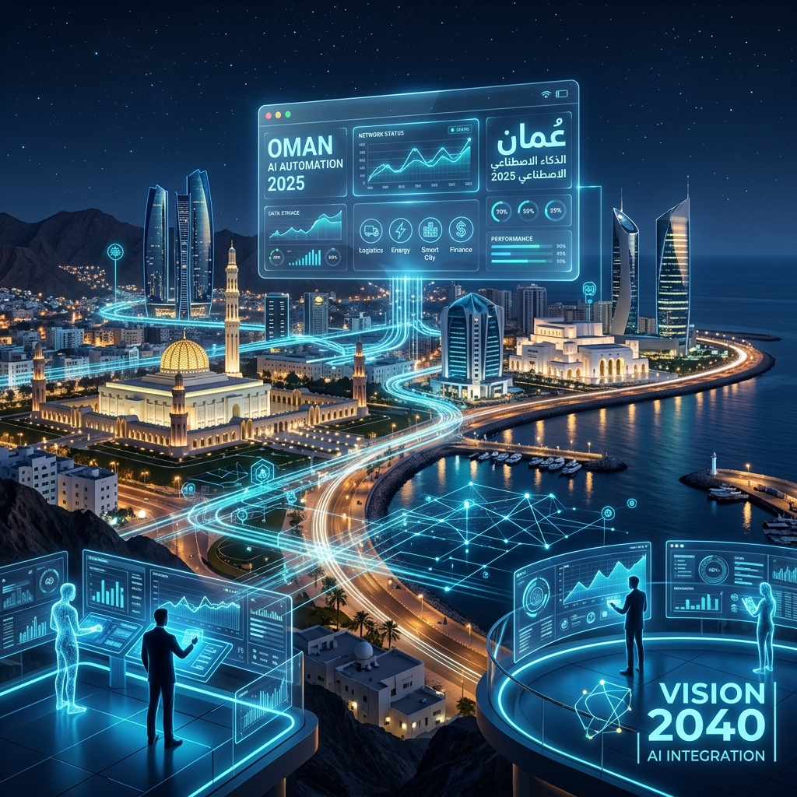
2026-04-28
أتمتة الذكاء الاصطناعي في عمان: دليل 2025 لأصحاب الأعمال
رؤية عمان 2040 تسرّع الذكاء الاصطناعي. اكتشف التكاليف المحلية بالريال العماني، ومقاييس عائد الاستثمار، وكيف تستخدم الشركات العمانية الأتمتة في الخدمات اللوجستية والسياحة.
اقرأ المزيد ←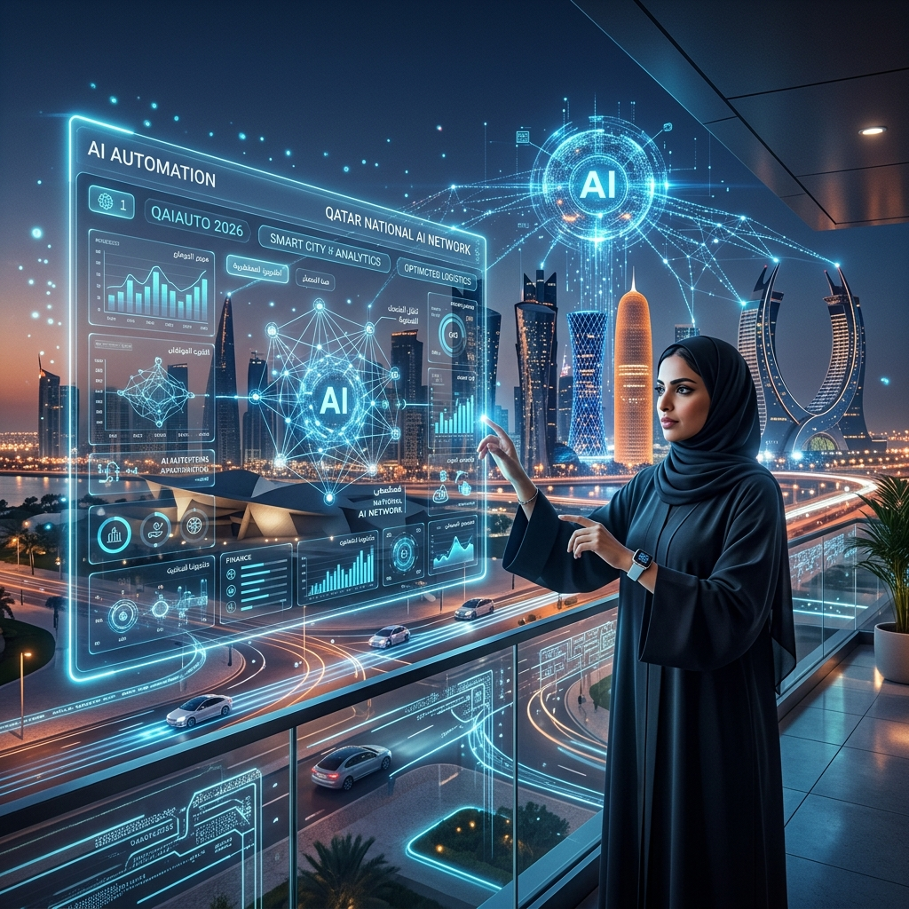
2026-04-28
كيف تستخدم الشركات القطرية أتمتة الذكاء الاصطناعي في 2026
اكتشف كيف تستخدم الشركات القطرية أتمتة الذكاء الاصطناعي في 2026 لخفض التكاليف بنسبة 40% وتعزيز العائد. بيانات حقيقية وتوافق مع رؤية قطر الوطنية 2030.
اقرأ المزيد ←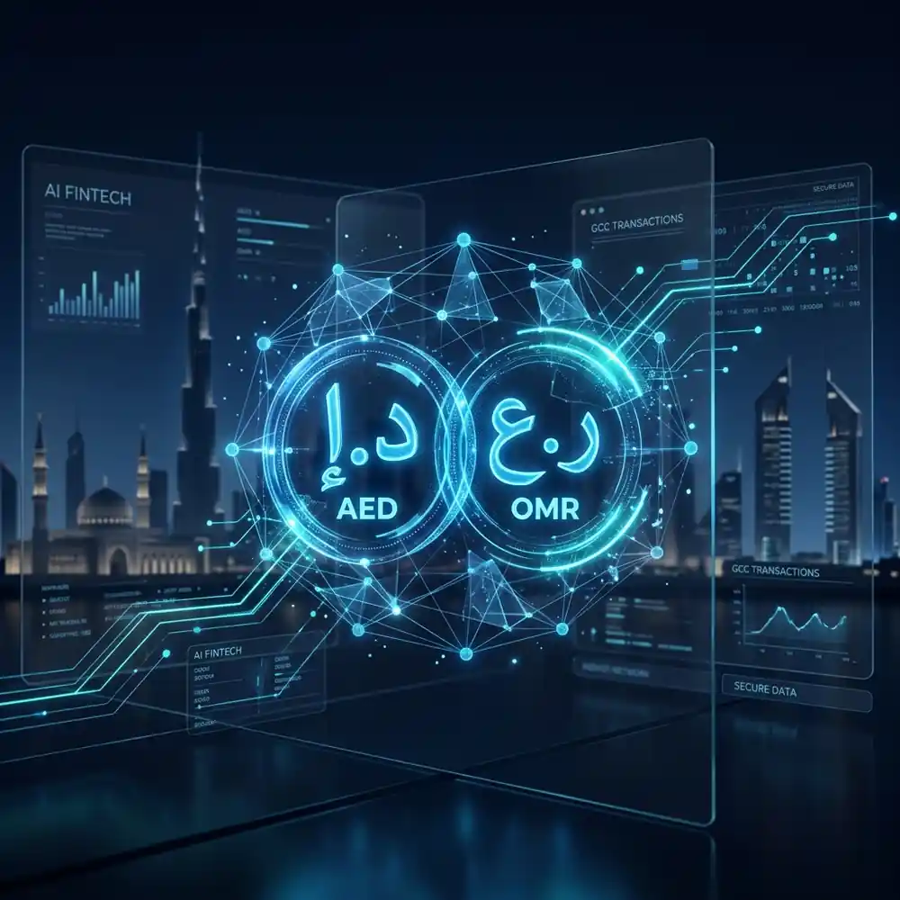
2026-04-28
تكلفة أتمتة الذكاء الاصطناعي للشركات في الإمارات (أسعار 2026)
دليل مفصل حول تكاليف أتمتة الذكاء الاصطناعي للشركات في الإمارات وعمان لعام 2026. يتضمن فئات الأسعار بالدرهم والريال، وبيانات العائد على الاستثمار.
اقرأ المزيد ←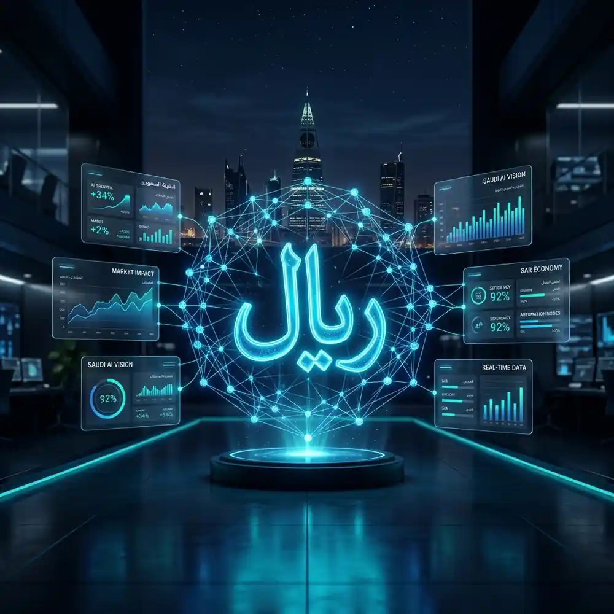
2026-04-28
أتمتة الذكاء الاصطناعي للشركات السعودية الصغيرة والمتوسطة: هل تستحق؟ (دليل رؤية 2030)
هل أتمتة الذكاء الاصطناعي تستحق للشركات السعودية الصغيرة والمتوسطة في 2026؟ اكتشف أسعار الريال، توافق رؤية 2030، وبيانات العائد الحقيقية.
اقرأ المزيد ←
2026-04-26
أتمتة الذكاء الاصطناعي في عُمان: دليل 2025 لأصحاب الأعمال
دليلك الكامل لعام 2025 حول أتمتة الذكاء الاصطناعي في سلطنة عمان. اكتشف كيف تتماشى الشركات المحلية مع رؤية 2040، وتخفض التكاليف، وتزيد الأرباح.
اقرأ المزيد ←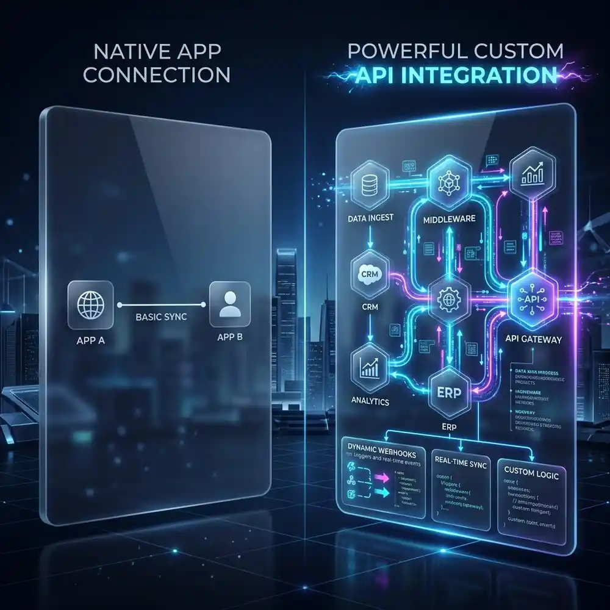
2026-04-25
لماذا عمليات تكامل API المخصصة أفضل من الاتصالات الأصلية للتطبيقات
اكتشف لماذا تختار الشركات المتنامية تكاملات API المخصصة وخطافات الويب (Webhooks) بدلاً من الاتصالات الأصلية الجامدة لبناء بنى أتمتة قوية ومقاومة للأعطال.
اقرأ المزيد ←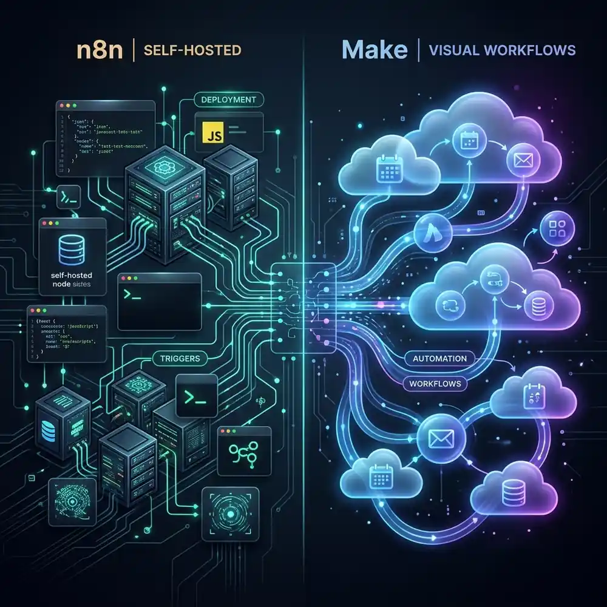
2026-04-23
n8n مقابل Make.com: ما هي أفضل منصة أتمتة لتوسيع نطاق عملك؟
مقارنة شاملة بين n8n و Make.com. قارن بين الأمان، والاستضافة الذاتية، والأسعار، وحدود API لاختيار منصة الأتمتة المناسبة لتوسيع نطاق عملك.
اقرأ المزيد ←2026-04-23
أهم 5 مهام متكررة يمكن لشركات الخدمات اللوجستية أتمتتها اليوم
اكتشف أهم 5 مهام متكررة يمكن لمديري الأساطيل ومسؤولي الإرسال أتمتتها اليوم لتقليل التكاليف، والقضاء على الأخطاء، وتوسيع نطاق العمليات اللوجستية.
اقرأ المزيد ←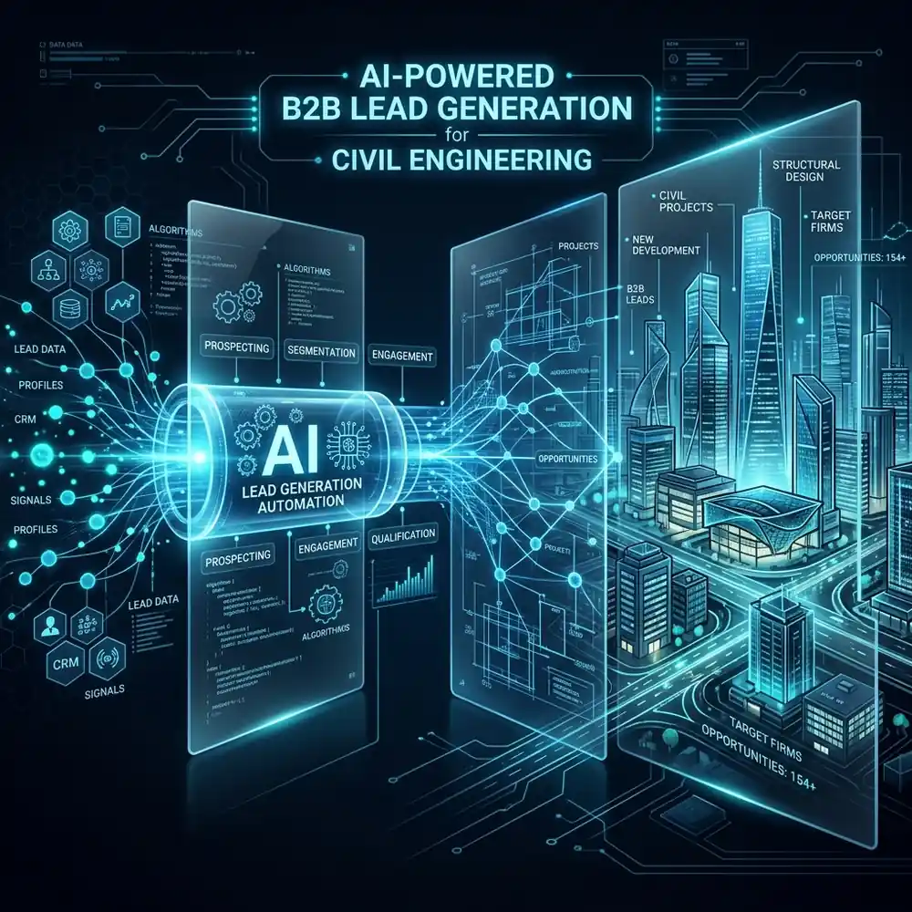
2026-04-22
الدليل الشامل لأتمتة توليد عملاء B2B لشركات الهندسة المدنية
تعرف على كيفية أتمتة عمليات استخراج البيانات، وتقييم العملاء، والتواصل للعثور على عملاء تجاريين موثوقين لشركات الهندسة المدنية.
اقرأ المزيد ←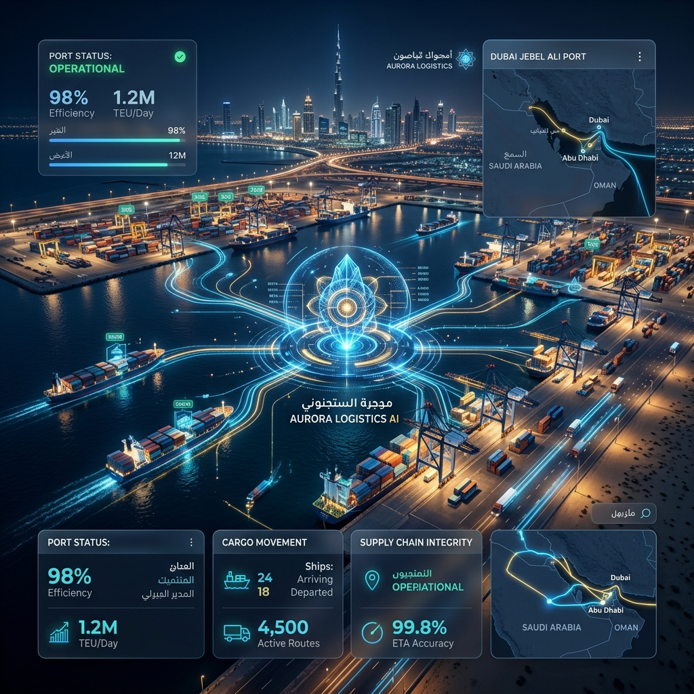
2026-04-21
أتمتة سير العمل بالذكاء الاصطناعي في قطاع النفط والغاز
اكتشف كيف تقوم شركات الطاقة الإقليمية الكبرى بأتمتة معالجة البيانات السيزمية، وتقارير السلامة، والمشتريات لإعادة تعريف الكفاءة.
اقرأ المزيد ←2026-04-20
واتساب للأعمال والذكاء الاصطناعي
اكتشف الفروق الجوهرية بين الردود التلقائية الأساسية في واتساب والمحادثات الحقيقية المدفوعة بالذكاء الاصطناعي التي تزيد المبيعات في دول مجلس التعاون الخليجي.
اقرأ المزيد ←2026-04-19
هل التعاقد مع وكالة أتمتة الذكاء الاصطناعي يستحق التكلفة؟ دليل لشركات الشرق الأوسط
هل يجب على شركتك في الخليج توظيف مطور داخلي للذكاء الاصطناعي أم التعاقد مع وكالة متخصصة؟ نحلل التكاليف، والسرعة، والمزايا الاستراتيجية.
اقرأ المزيد ←2026-04-19
كيف تبني موظف استقبال ذكي عبر واتساب لشركتك في عام 2026
تعلم خطوة بخطوة المعمارية البرمجية لبناء روبوت الاستقبال الذكي لخدمة العملاء، ولماذا يعتبر الاعتماد على خبير مختص الطريقة الأقصر للنجاح.
اقرأ المزيد ←2026-04-19
ما هو العائد على الاستثمار من أتمتة الذكاء الاصطناعي لشركات الخدمات اللوجستية في عمان والإمارات؟
اكتشف كيف تحدث أتمتة الذكاء الاصطناعي ثورة في قطاعات اللوجستيات وسلاسل الإمداد في الخليج من خلال تقليل الاختناقات وزيادة العائد الاستثماري.
اقرأ المزيد ←2026-04-19
توقف عن خسارة العملاء: لماذا تحتاج الشركات الخليجية للذكاء الاصطناعي في خدمة الواتساب
اكتشف لماذا تقتل الاستجابات المتأخرة عبر واتساب مبيعاتك في الخليج، وكيف يقضي الأتمتة على خسارة العملاء.
اقرأ المزيد ←2026-04-19
ما هي تكلفة أتمتة الذكاء الاصطناعي لشركات الـ B2B في دول الخليج؟
اكتشف التكلفة الحقيقية لأتمتة الذكاء الاصطناعي للشركات في دول الخليج. نقارن العائد على الاستثمار لإلغاء المهام المتكررة مقابل رسوم الإعداد الأولية.
اقرأ المزيد ←2026-04-14
صعود الذكاء الاصطناعي السيادي: لماذا تغلق الدول على بياناتها في عام 2026
اكتشف لماذا أصبح الذكاء الاصطناعي السيادي الحركة التكنولوجية والجيوسياسية الأبرز لعام 2026، حيث تبقي الدول والمؤسسات نماذج الذكاء الاصطناعي ضمن حدودها.
اقرأ المزيد ←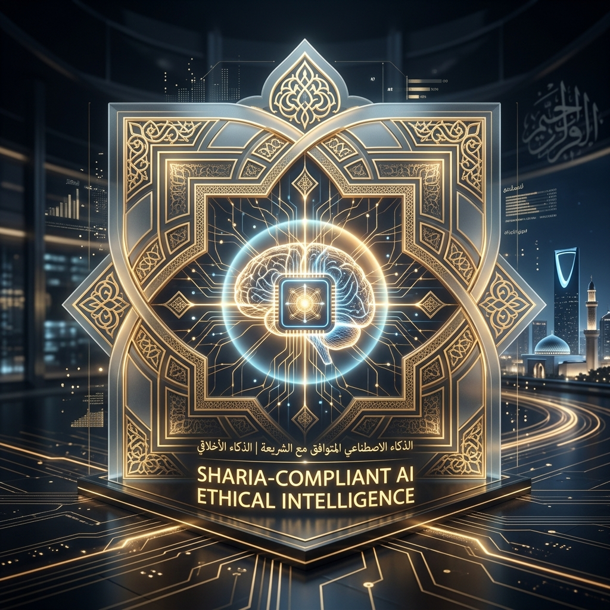
2026-04-14
أخلاقيات الذكاء الاصطناعي والتوافق مع الشريعة: مستقبل التطوير المسؤول في 2026
اكتشف كيف تتقاطع أخلاقيات التكنولوجيا الحديثة مع مبادئ الشريعة الإسلامية لبناء أنظمة ذكاء اصطناعي مسؤولة أخلاقياً واقتصادياً في منطقة الخليج لعام 2026.
اقرأ المزيد ←2026-04-06
The End of Busywork: How AI is Definitively Replacing Administrative Tasks in 2026
Discover how autonomous AI agents and intelligent workflows are eliminating manual data entry, automating scheduling, and redefining administrative roles in 2026.
اقرأ المزيد ←2026-04-06
What the GCC Is Asking Google About AI in 2026
A deep dive into the top Google search trends across the GCC regarding Artificial Intelligence. Discover what business leaders and consumers in the Middle East actually want to know about AI.
اقرأ المزيد ←2026-04-04
AI Receptionist: The 24/7 Front Desk Your Business Didn't Know It Needed
Discover how AI receptionists are transforming small businesses — answering every call, booking appointments, and qualifying leads 24/7 at a fraction of the cost of a human hire. Learn the ROI, best practices, and Gulf-region insights.
اقرأ المزيد ←2026-04-01
NotebookLM للمدراء المشغولين: الدليل العملي الكامل
دليل عملي خالٍ من النظريات حول Google NotebookLM لأصحاب الأعمال والمدراء. اكتشف كيف تقرأ التقارير في دقائق، وتستعد للاجتماعات، وتتخذ قرارات أذكى — ابتداءً من اليوم.
اقرأ المزيد ←
2026-04-01
كيف تتسرب بيانات الشركات عبر الذكاء الاصطناعي — وكيف تحمي نفسك
اكتشف كيف تتسرب بيانات شركتك السرية بصمت عبر أدوات الذكاء الاصطناعي مثل ChatGPT وGemini، وتعلم الخطوات الدقيقة لحماية مؤسستك من تسريب البيانات في عام 2025.
اقرأ المزيد ←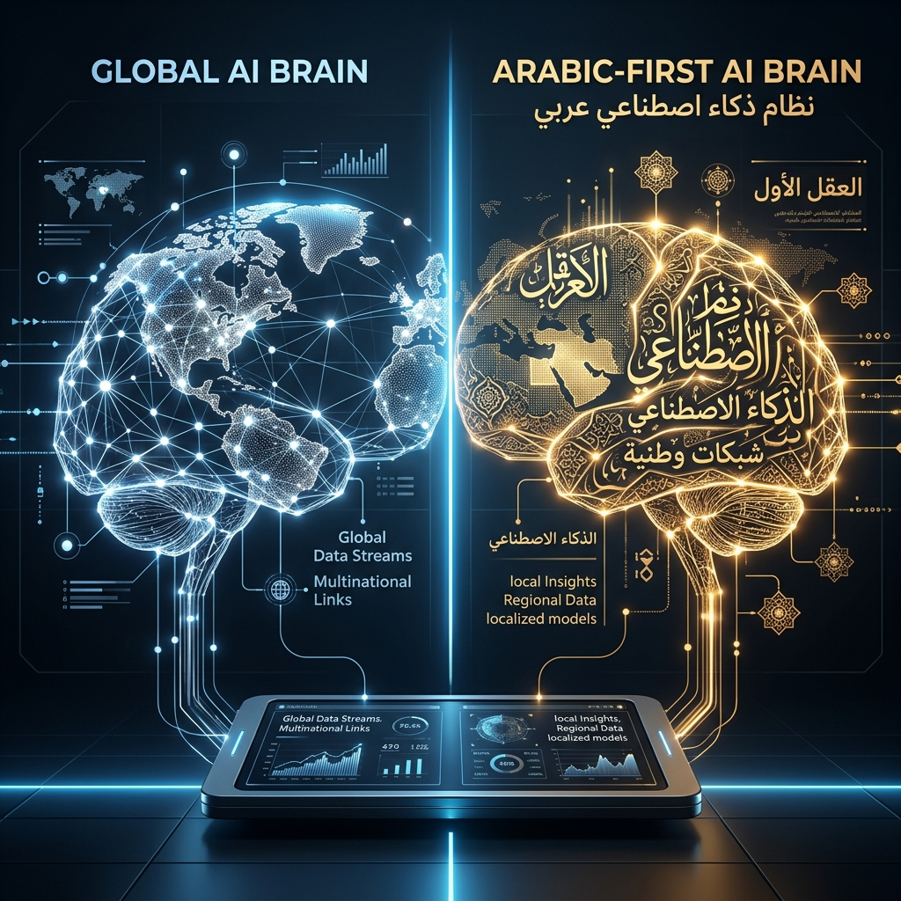
2026-03-31
نماذج الذكاء الاصطناعي العربية مقابل العالمية: مقارنة مبسطة
Read our latest updates and news.
اقرأ المزيد ←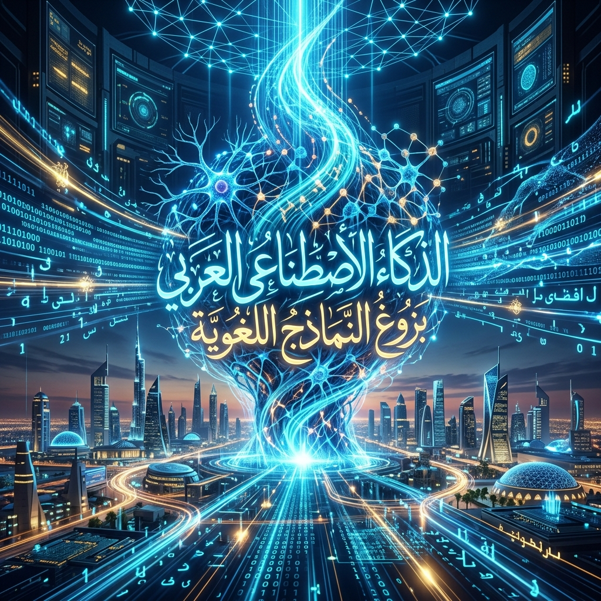
2026-03-31
بزوغ نماذج الذكاء الاصطناعي العربية: استعادة السرد الرقمي
Read our latest updates and news.
اقرأ المزيد ←
2026-03-30
كيف تحقق أتمتة الذكاء الاصطناعي أهداف رؤية عُمان 2040
Read our latest updates and news.
اقرأ المزيد ←2026-03-28
المساعد الذكي في القيادة: لوحات تحكم الرؤساء التنفيذيين لعام 2026
Read our latest updates and news.
اقرأ المزيد ←
2026-03-28
القوة الهادئة لتنبيهات جوجل في عام 2026
اكتشف أحدث التحديثات على تنبيهات جوجل وكيف تستمر الأداة في تقديم مراقبة حاسمة للعلامة التجارية حتى مع التخلص التدريجي من تقارير الويب المظلم.
اقرأ المزيد ←